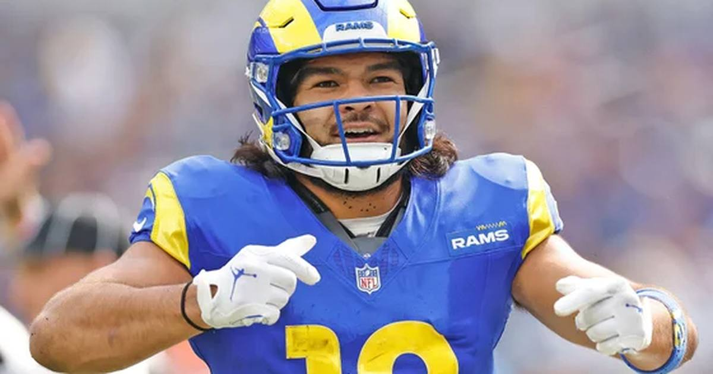

2-Leg Parlay (~+114): Rams ML + Bills ML
Two favorites in the best spots on the Sunday slate — the Rams at home against the winless Chargers, and the Bills at home with Lamar Jackson returning on a bum ankle. Together they pay about +114.

The legs
Leg 1 — Rams moneyline (-278) vs. Chargers. The Chargers are 0-6, last in the league in scoring at 15.0 points per game, and down Derwin James. The Rams are at home at SoFi with Matthew Stafford throwing to Puka Nacua. The moneyline is steep, but it's the safe half of this ticket for a reason — see the full Rams -6.5 writeup for the case.
Leg 2 — Bills moneyline (-175) vs. Ravens. Buffalo is 5-1, off a bye, with the league's top scoring offense, at home in Orchard Park. Lamar Jackson is back for Baltimore, which makes the Ravens dangerous — but he's returning from a high-ankle sprain after three missed games, and Buffalo's offense doesn't need help to score. The Bills at -175 are the second-favorite leg that still pays.
The math
Rams -278 and Bills -175 combine to roughly +114 — bet $100 to win about $114. Two favorites, no lottery tickets, no ten-leg dreams. Both teams are at home, both are the better team on paper, and both are playing opponents with real, documented problems: a winless team missing its defensive star, and a team starting a quarterback in his first game back from injury.
The honest caveat: parlays multiply risk, not just reward. If either favorite stubs its toe — a post-bye Chargers surprise, or a vintage Lamar performance in his return — the whole ticket loses, even if the other leg cruises. That's the deal with every parlay, and it's why this one stays at two legs.
If gambling stops being fun, call 1-800-GAMBLER.
Sources: Statsalt — Chargers vs. Rams picks, USA TODAY Sportsbook Wire — Ravens at Bills odds